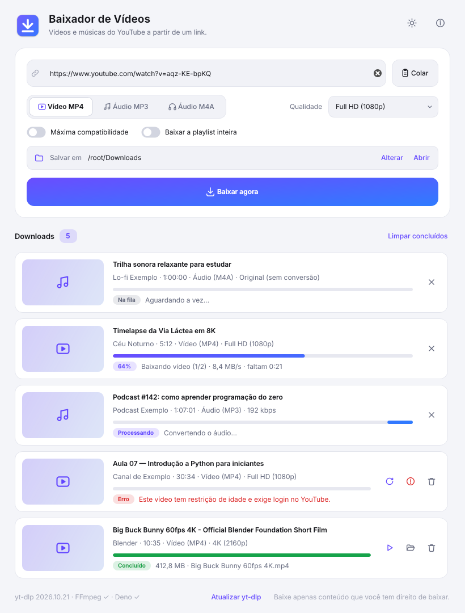

Vídeo em MP4 até 4K
Escolha de 360p a 4K. O modo de máxima compatibilidade gera vídeo H.264, que abre em qualquer player e editor.
Grátis · Código aberto · Sem anúncios
Cole o link do YouTube, escolha vídeo em MP4 (até 4K) ou música em MP3 e pronto. Um app leve para Windows, Mac e Linux.

Sem propaganda, sem cadastro e sem limite de downloads.
Escolha de 360p a 4K. O modo de máxima compatibilidade gera vídeo H.264, que abre em qualquer player e editor.
Com a capa e as informações da música já gravadas no arquivo, em até 320 kbps.
Baixe todos os vídeos de uma playlist de uma vez, organizados numa pasta com o nome dela.
Vários downloads com porcentagem, velocidade e tempo restante. Cancele ou tente de novo quando quiser.
Acompanha o tema do seu sistema, ou fica do jeito que você escolher.
O YouTube muda com frequência. O app se atualiza sozinho para continuar funcionando.
Versão 1.0.0. Os arquivos vêm direto da página oficial do projeto no GitHub.
Windows 10 e 11 (64 bits)
macOS 12 Monterey ou mais novo
Clique no menu Apple e em Sobre Este Mac. Se aparecer “Chip Apple M…”, baixe a versão Chip Apple. Se aparecer “Processador Intel”, baixe a versão Intel.
64 bits (Ubuntu, Fedora, Mint…)
Leva um minuto. Escolha o seu sistema:
Preferiu a versão portátil? Extraia o .zip (botão direito, Extrair tudo…) e abra o Baixador.exe.
xattr -cr /Applications/Baixador.app
sudo apt install libxcb-cursor0
Preferiu o .tar.gz? Extraia e rode o install.sh para colocar o app no menu de aplicativos.
Sim. É grátis, sem anúncios e de código aberto: qualquer pessoa pode ver como ele funciona no GitHub.
Para não mostrar aviso, o app precisaria de um certificado de assinatura pago (no Mac, US$ 99 por ano). O código é aberto, e os instaladores são gerados automaticamente pelo GitHub a partir dele. O passo a passo para liberar está em Como instalar.
Três programas livres que fazem o trabalho pesado: o yt-dlp (faz o download), o FFmpeg (junta vídeo e áudio e converte para MP3) e o Deno (exigido pelo yt-dlp para o YouTube). Eles são baixados das páginas oficiais de cada projeto, uma única vez.
Sim. Além do YouTube, funciona com centenas de sites suportados pelo yt-dlp.
Quase sempre é uma mudança no YouTube. Clique em Atualizar yt-dlp, no rodapé do app, e tente de novo. O app também procura atualizações sozinho uma vez por dia.
Não. O Baixador é um app para computador (Windows, Mac e Linux).
Baixe apenas conteúdo que você tem direito de baixar: seus próprios vídeos, conteúdo de domínio público, com licença livre (como Creative Commons) ou com autorização de quem tem os direitos. Os Termos de Serviço do YouTube proíbem downloads fora dos recursos oficiais da plataforma.